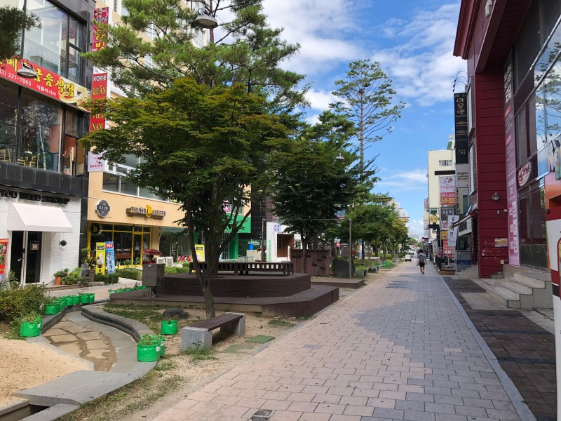
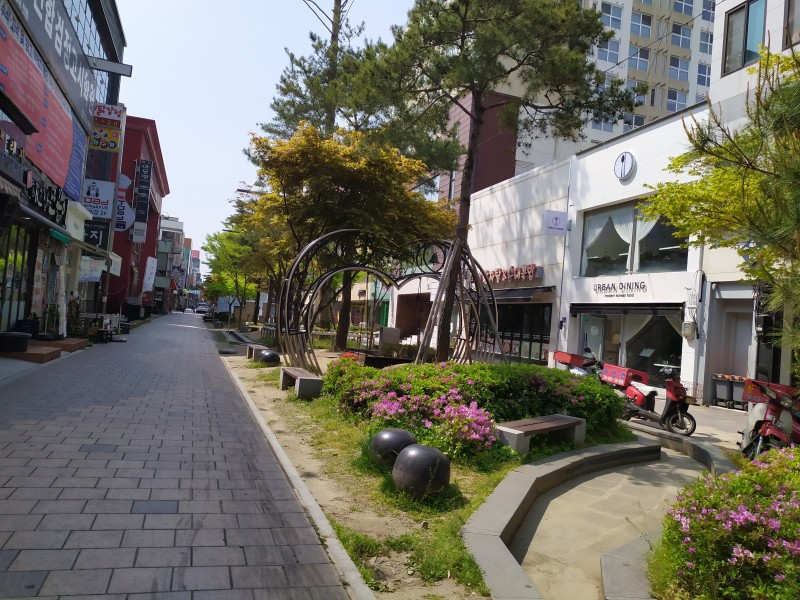
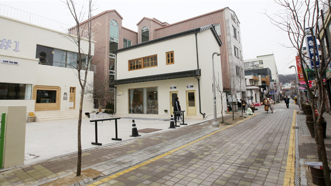
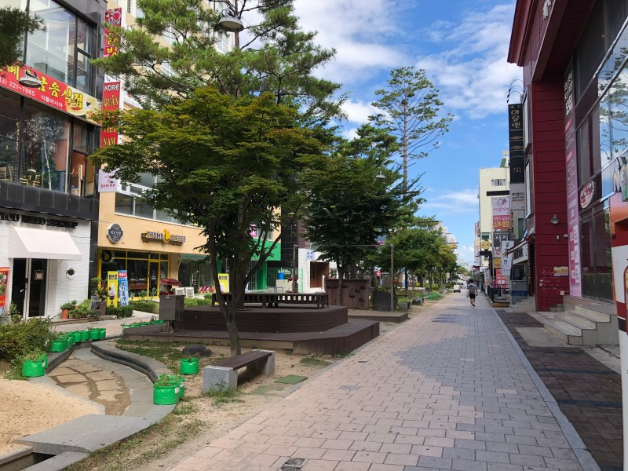
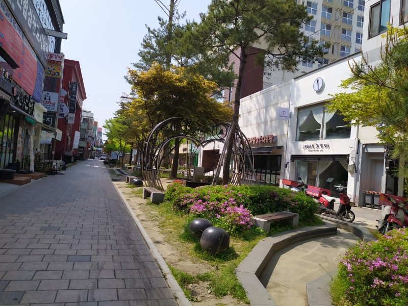
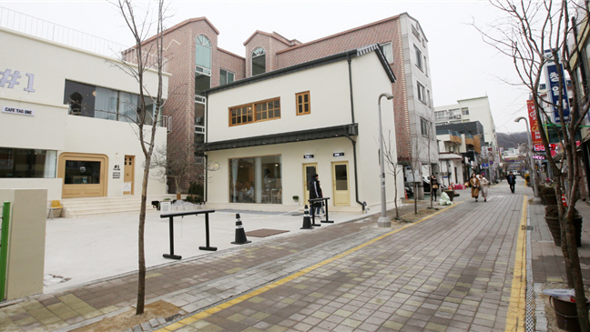

중앙로-소나무길
소나무길은 수령 100년이 넘는 강원도 홍천산 장송들을
이곳에 옮겨 심어놓음으로써 조성됐습니다.
‘소나무길 차 없는 거리’ 조성 사업이 추진되고, 소나무길 프리마켓, 아트페어를 비롯한 다양한 문화예술 프로그램이 꾸준하게 진행됨으로써 유동 인구율이 크게 증가했습니다.
‘소나무길 차 없는 거리’ 조성 사업이 추진되고, 소나무길 프리마켓, 아트페어를 비롯한 다양한 문화예술 프로그램이 꾸준하게 진행됨으로써 유동 인구율이 크게 증가했습니다.
아트페어
원도심 내에 방치된 중앙 시장 2층을
개조, 미술관으로 만들어 전국의
중견 작가들이 적극참여합니다.
원도심 내에 방치된 중앙 시장 2층을
개조, 미술관으로 만들어 전국의
중견 작가들이 적극참여합니다.
카페&맛집의 거리
소나무길 주변에는 SNS에서도 핫한
소문난 맛집, 예쁘고 특색 있는 카페들이
즐비해 있습니다.
소나무길 주변에는 SNS에서도 핫한
소문난 맛집, 예쁘고 특색 있는 카페들이
즐비해 있습니다.
프리마켓
공예작가들이 공예품을 전시·판매
하는 청주 문화예술 프리마켓이
매주 토요일에 열립니다.
공예작가들이 공예품을 전시·판매
하는 청주 문화예술 프리마켓이
매주 토요일에 열립니다.
 




